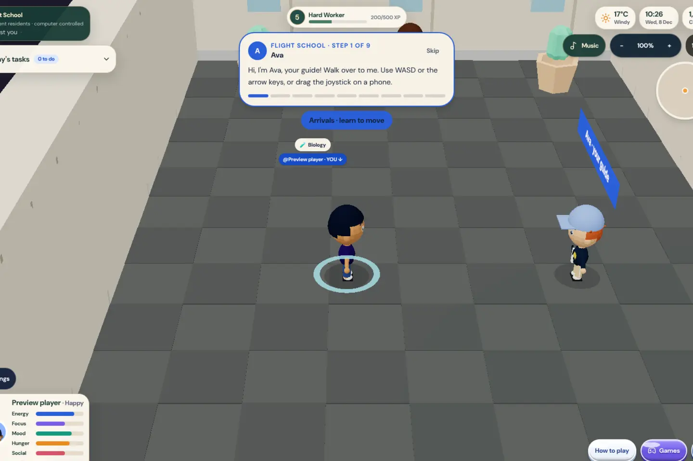
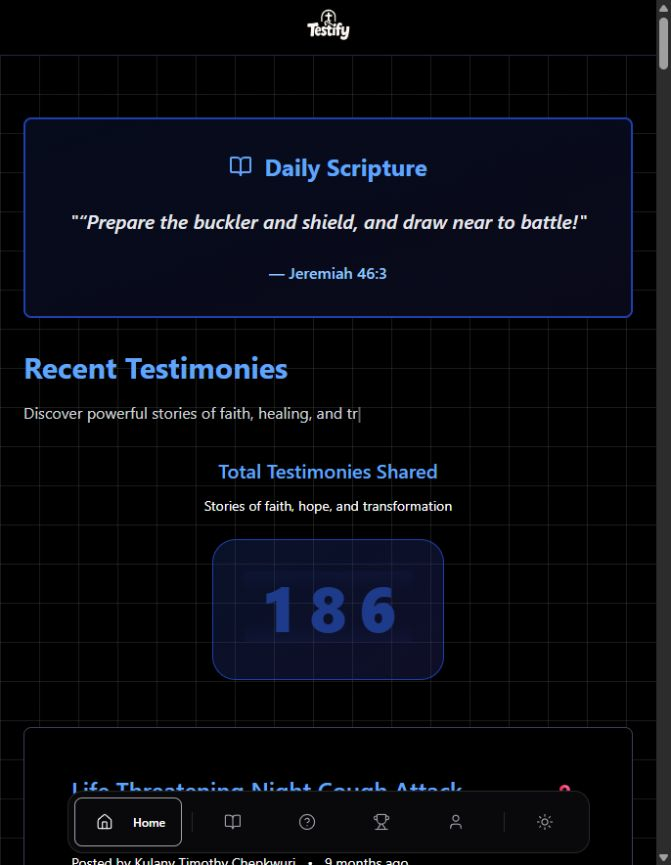
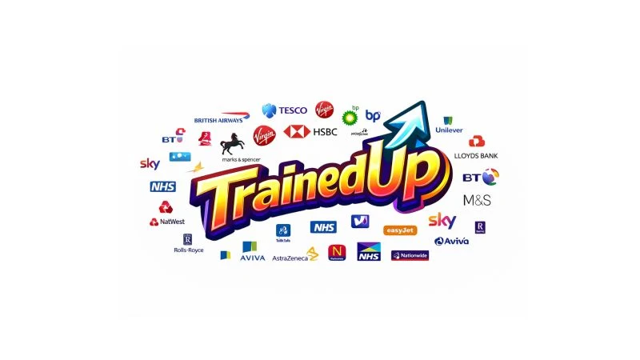
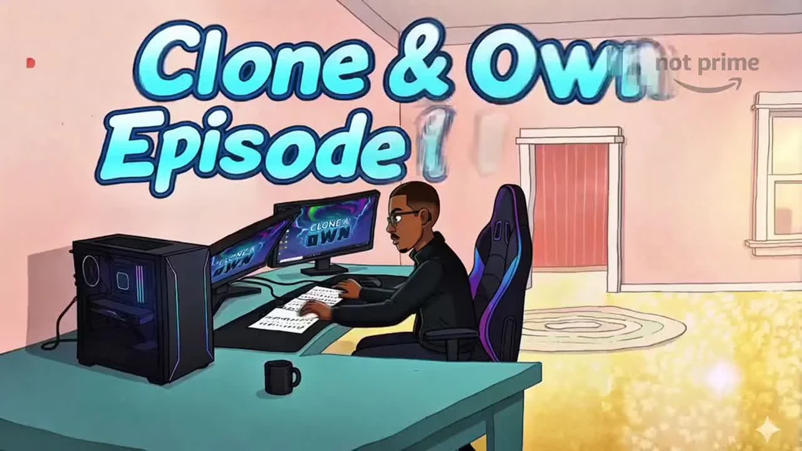

LONDON · SOFTWARE · AI · CREATIVE TECHNOLOGY
Princewill Okube
Developer, creator and curious human.
I build websites, interactive applications and creative technology projects that connect people, learning and opportunity. My work spans education, community, AI experiments, fintech prototypes and browser games.
SELECTED WORK
Projects by Princewill Okube


TrainedUp
Practical learning, career preparation and confidence, building on InfiniteOptions.
Explore TrainedUp ↗
Clone & Own
A creative technology series turning community ideas into working demos.
Explore Clone & Own ↗Explore Princewill’s Game Studio for playable browser projects, concept artwork and coding breakdowns. Fan games, prototypes and third-party adaptations are labelled in the collection.
BACKGROUND
Computing, AI and finance
- BSc Computer Science studies — City, University of London, 2023–26.
- MSc Artificial Intelligence — Queen Mary University of London, 2026–27 programme announcement.
- MSc Financial Engineering — WorldQuant University.
- IBM credentials: Agentic AI with LangChain and LangGraph; Building AI Agents and Agentic Workflows.
Recognised among the UK’s Top 150 Future Leaders for 2025–26, with work opening opportunities through InfiniteOptions.
Education, credentials and announcements on LinkedIn ↗WORK TOGETHER
Services and collaborations
Websites & portfolios
Personal portfolios, landing pages and business websites.
Web apps & prototypes
Interactive tools and focused product prototypes.
AI & practical learning
AI workflow prototypes and practical technology sessions.
Fintech prototypes
Portfolio dashboards, financial data tools, budgeting apps and scenario analysis prototypes.
CV & LinkedIn support
CV reviews, achievement statements and profile support.
Interview & career preparation
Project presentation and interview practice.
Brand collaborations
Product walkthroughs, creative content and technology-led campaign concepts.
Fintech items describe project services and prototype ideas, rather than a list of completed client engagements.
LET’S CONNECT
Contact Princewill Okube
For development projects, brand collaborations, career support or a creative idea, reach out with your brief, timeline and what you want to achieve.